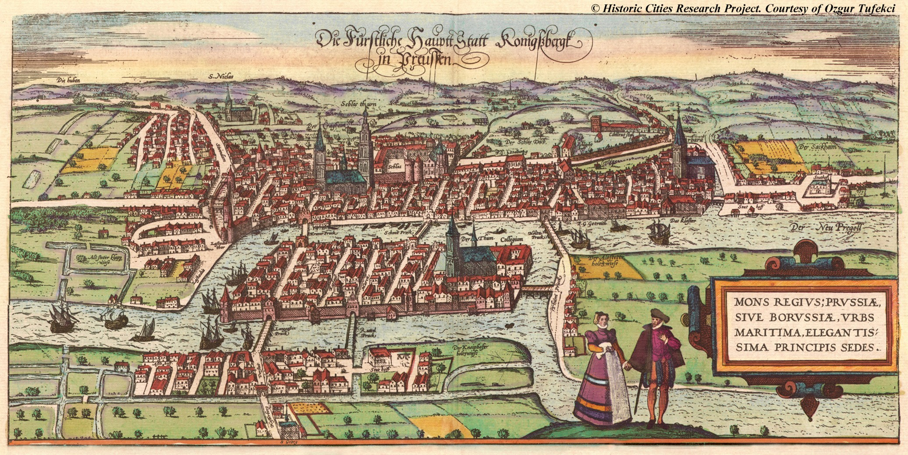

FEL3250: Course information
|
 |
Leonhard Euler's problem of the “Seven Bridges of Königsberg” is an early example of network optimization for which finding a walk with a common starting and ending point through the city that would cross each bridge only once. In the figure: “Die fürstliche Hauptt Statt Konigsbergk in Preussen”, general view of Königsberg, handcoloured copper engraving by Braun & Hogenberg from “Civitates Orbis Terrarum”, Cologne 1585.
|
Description
Network optimization theory provides the methods of optimal decision making over networks. It has pervasive applications in engineering, such as in Communication Networks allocation and control, Signal Processing, Big Data analysis, Smart Grids, Intelligent Transportation Systems, and Financial Market, to mention a few. In these application domains, typical problems are those of routing, auctions, resources assignment, minimum cost flow, travelling salesman, generalized assignment, spanning tree, and matching.
This course provides an overview on network optimization fundamentals and engineering applications with focus on linear, nonlinear, and discrete problems. The interplay between discrete and continuous problem structures will be highlighted. Discrete network optimization problems will be discussed in the detail. In the case of continuous network optimization, duality and iterative cost improvement will be studied and applied in most common linear cost problems, such as minimum cost flow and transshipment problems. Main solution methods, including branch-and-bound, Lagrangian relaxation, Dantzig-Wolf decomposition, heuristics, and local search methods will be studied.
The course will present in the detail some selected applications to engineering problems of societal impact, such as Optimal Access Point Assignment in wireless networks, Optimal Power Flow in smart grids, multi-agent scheduling in Intelligent Transport Systems, and Privacy Preserving optimization.
Intended Audience
PhD students in areas of applied mathematics, communication, control, computer sciences, networking, civil engineering.
Course Textbook
D. P. Bertsekas, Network Optimization Continuous and Discrete Models, Athena Scientific, Belmont, Mass., USA, 1998. (Download)
Lectures
Schedule is available here and a summary of lectures is available here.
Grading
Pass/Fail
To pass the course, at least 70% of the grades have to be achieved.
The course evaluation consists of the following grades
Course goals
After finishing the course, the attendant will
know the basics of linear, non linear, and discrete optimization
know the essential aspects of network optimization theory
know how to apply network optimization to practical engineering problems
develop a research project
Working load
2h per lecture + 5h exercise sessions + 5 homework + take home exam + research work.
Teaching and learning methodology
The lectures will be mainly based on blackboard and slides, see lectures.
Prerequisites
The course is self-contained. Simple mathematical maturity, i.e., familiarity with mono-dimensional mathematical analysis will be enough.
Follow up
The following courses are excellent as follow up, or complementary
Convex Optimization, Prof. Mikael Johansson
Combinatorial Optimization, Prof. Anders Forsgren
Computational Game Theory, Prof. Gyorgy Dan
Sequential Decision Processes, Prof. Alexandre Proutiere
|